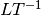

flopy.mf6.modflow.mfgwfrcha Module¶
-
class
flopy.mf6.modflow.mfgwfrcha.ModflowGwfrcha(model, loading_package=False, readasarrays=True, fixed_cell=None, auxiliary=None, auxmultname=None, print_input=None, print_flows=None, save_flows=None, tas_filerecord=None, obs_filerecord=None, irch=None, recharge=0.001, aux=None, fname=None, pname=None, parent_file=None)¶ ModflowGwfrcha defines a rcha package within a gwf6 model.
Parameters: - model : MFModel
Model that this package is a part of. Package is automatically added to model when it is initialized.
- loading_package : bool
Do not set this parameter. It is intended for debugging and internal processing purposes only.
- readasarrays : boolean
- readasarrays (boolean) indicates that array-based input will be used for the Recharge Package. This keyword must be specified to use array-based input.
- fixed_cell : boolean
- fixed_cell (boolean) indicates that recharge will not be reassigned to a cell underlying the cell specified in the list if the specified cell is inactive.
- auxiliary : [string]
- auxiliary (string) defines an array of one or more auxiliary variable names. There is no limit on the number of auxiliary variables that can be provided on this line; however, lists of information provided in subsequent blocks must have a column of data for each auxiliary variable name defined here. The number of auxiliary variables detected on this line determines the value for naux. Comments cannot be provided anywhere on this line as they will be interpreted as auxiliary variable names. Auxiliary variables may not be used by the package, but they will be available for use by other parts of the program. The program will terminate with an error if auxiliary variables are specified on more than one line in the options block.
- auxmultname : string
- auxmultname (string) name of auxiliary variable to be used as multiplier of recharge.
- print_input : boolean
- print_input (boolean) keyword to indicate that the list of recharge information will be written to the listing file immediately after it is read.
- print_flows : boolean
- print_flows (boolean) keyword to indicate that the list of recharge flow rates will be printed to the listing file for every stress period time step in which “BUDGET PRINT” is specified in Output Control. If there is no Output Control option and “PRINT_FLOWS” is specified, then flow rates are printed for the last time step of each stress period.
- save_flows : boolean
- save_flows (boolean) keyword to indicate that recharge flow terms will be written to the file specified with “BUDGET FILEOUT” in Output Control.
- tas_filerecord : [tas6_filename]
- tas6_filename (string) defines a time-array-series file defining a time-array series that can be used to assign time-varying values. See the Time-Variable Input section for instructions on using the time- array series capability.
- obs_filerecord : [obs6_filename]
- obs6_filename (string) name of input file to define observations for the Recharge package. See the “Observation utility” section for instructions for preparing observation input files. Table reftable:obstype lists observation type(s) supported by the Recharge package.
- irch : [integer]
- irch (integer) IRCH is the layer number that defines the layer in each vertical column where recharge is applied. If IRCH is omitted, recharge by default is applied to cells in layer 1. IRCH can only be used if READASARRAYS is specified in the OPTIONS block. If IRCH is specified, it must be specified as the first variable in the PERIOD block or MODFLOW will terminate with an error.
- recharge : [double]
- recharge (double) is the recharge flux rate (). This rate is multiplied inside the program by the surface area of the cell to calculate the volumetric recharge rate. The recharge array may be defined by a time-array series (see the “Using Time-Array Series in a Package” section).
- aux : [double]
- aux (double) is an array of values for auxiliary variable aux(iaux), where iaux is a value from 1 to naux, and aux(iaux) must be listed as part of the auxiliary variables. A separate array can be specified for each auxiliary variable. If an array is not specified for an auxiliary variable, then a value of zero is assigned. If the value specified here for the auxiliary variable is the same as auxmultname, then the recharge array will be multiplied by this array.
- fname : String
File name for this package.
- pname : String
Package name for this package.
- parent_file : MFPackage
Parent package file that references this package. Only needed for utility packages (mfutl*). For example, mfutllaktab package must have a mfgwflak package parent_file.
-
get_package(name=None)¶ Get a package.
Parameters: - name : str
Name of the package, ‘RIV’, ‘LPF’, etc.
Returns: - pp : Package object